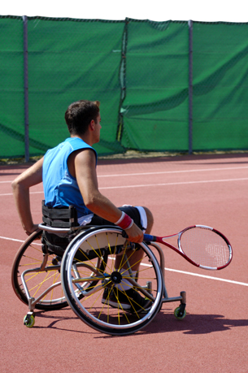

Module 8—Acid-Base Equilibrium
Lesson 7—Buffers

© Alistair Scott/iStockphoto
 Get Focused
Get Focused
In previous lessons you’ve been learning about acid deposition and the effect it can have. Why doesn’t the soil in Alberta appear to be affected? Is there something about the chemical composition of soil in Alberta that prevents damage from acid deposition?
While it may appear that acid is not having a negative effect, accumulation of acids can adversely affect other systems. Consider the example of tennis. Tennis is all about short bursts of energy. Tennis can be extremely tiring because there is little time to recover between efforts. When you move to return the ball, your body metabolizes energy to allow the muscles to contract. Sometimes the exercise is so intense that your muscles accumulate lactic acid, a by-product of metabolism.
You may recall from previous science courses that the human body is designed to function within a narrow pH range. How does the human body deal with lactic and other acids that may be present? In this lesson you will investigate the properties of buffers as equilibrium systems.
Consider the following questions as you complete Lesson 7:
- What is a buffer and how does a buffer exhibit the characteristics of an equilibrium system?
- What is buffering capacity?
 Module 8: Lesson 7 Assignment
Module 8: Lesson 7 Assignment
Download a copy of the Module 8: Lesson 7 Assignment to your computer now. You will receive further instructions on how to complete this assignment later in this lesson.
You must decide what to do with the questions that are not marked by the teacher.
Remember that these questions provide you with the practice and feedback that you need to successfully complete this course. You should respond to all of the questions and place those answers in your course folder.